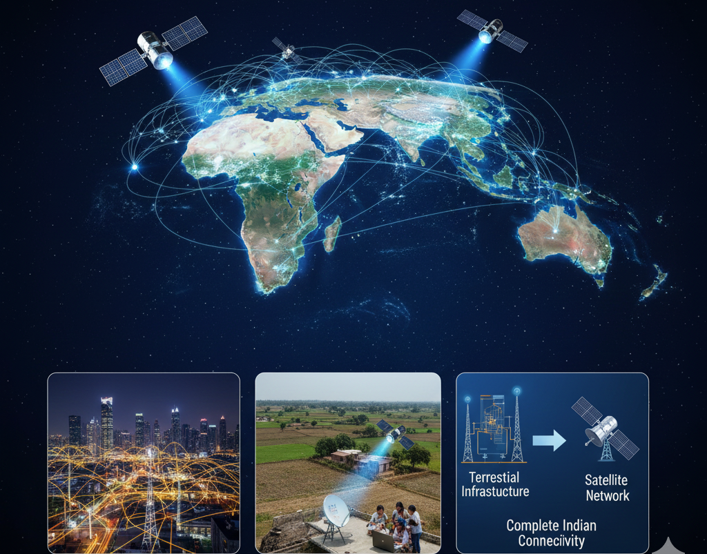

Why India Needs Satellite Internet
Beyond cities, satellite networks bridge gaps where traditional infrastructure struggles.
Remote & Rural Access
Mountainous regions, islands, and tribal belts can access reliable broadband without waiting for fiber rollout.
Disaster Resilience
Satellite links restore communication quickly during floods, earthquakes, or cyclones.
Education & Healthcare
Enables online classes, digital classrooms, telemedicine, and remote diagnostics.
Economic Inclusion
Small businesses, agriculture services, and local markets gain digital access.
Key Benefits
Advantages that make satellite internet a powerful complement to fiber and mobile networks.
Rapid Deployment
No digging or cabling required — terminals can be installed within hours or days.
Wide Coverage
Provides connectivity across land, sea, and air — including hard-to-reach locations.
Network Redundancy
Acts as a backup for fiber and mobile networks in critical applications.
Future Ready
Supports IoT, smart cities, defense, aviation, and next-gen digital services.
India Coverage & Network Vision
Image of how satellite networks complement terrestrial infrastructure.
